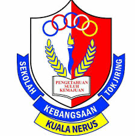
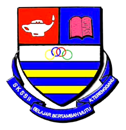
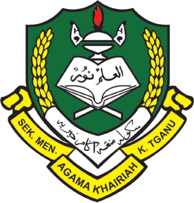

Nabilah's Education
I went to Sekolah Kebangsaan Tok Jiring to learn for four years, from 2007 to 2010. It was here that I learned how to take care of myself and do things by myself. In the meantime, I got to know my classmates and made new friends. There were two study times at this school, one in the morning and one in the afternoon. Both sessions gave me the chance to learn. I cannot deny that I love afternoon sessions simply because I dislike morning ones. I am very positive and excited to learn a lot of new things. For example, this is the first time I have had pocket money and had to make all of my own decisions. This was the first obstacle I had to overcome, and it helped me become the person I am today. Since I am no longer a kid, I miss the feeling of not having to think about anything and just having fun and playing as much as I can. The best part of being a kid for me is this time.
During the 2011–2012 academic year, I attended Sekolah Sultan Sulaiman II. If you count this elementary school, it will be my second. There were some family matters, so I had to shift from Sk Tok Jiring to Sk Sultan Sulaiman II. Because of the upcoming UPSR exam, I had taken my studies very seriously from the beginning of this. While I do enjoy messing around them, I made a conscious effort to concentrate on my studies this time around because my parents really wanted me to do well in school. Even though I didn't get the chance to do them proud, I am thankful to have gotten 4A 1B because it shows how hard I worked to attain this outcome.
Afterwards, I attended Sekolah Menengah Agama Khairiah for my high school education from 2013 to 2017, when I was about 13 years old. I absolutely adore my high school because it is only for girls. The regular school day begins in the morning. There will be PT3 at the third level and SPM at the fifth level throughout the exam year. During the exam year, students have numerous opportunities of extra classes in the afternoons, evenings, and on weekends. My involvement in extracurricular activities began in high school, when I served as president of the business club, secretary of the history club, class representative, and police cadet. I attend numerous shooting camps, state level camping, and other events. I used to have a large social circle since I became close with every single person in my school, regardless of their background. The best part of high school is over, and I long for the good old days spent with my friends. They went from being seen every day to being visible only on social media. Even though not everyone can attend, arranging a time to meet up with everyone becomes much more challenging in the absence of school reunions.
 Despite having SPM marks that were barely good enough to gain me any opportunities, Universiti Sultan Zainal Abidin offered me a Diploma in Accounting program to pursue. Continuing my education at UniSZA was my top priority because of my mom. The reason behind this is because I prioritise spending time with my mother and taking care of my younger brother, as I do not want to be separated from them. When I was younger, I used to be the type of person who quickly become friends with everyone. Now, though, I am much more selective, and I only initiate friendships when someone is already friends with one of my friends. I don not feel the urge to meet new people because a lot of my high school classmates are here at UniSZA for school. Perhaps it is because I am afraid of dealing with people. When I first started taking Accounting for Diploma, I had a little trouble because I was used to learning in a Malay format but now I have to adapt to studying in an English format. This is in complete opposition to what I learnt in high school, when things were much easier. I am proud of my honors degree, after all.
Despite having SPM marks that were barely good enough to gain me any opportunities, Universiti Sultan Zainal Abidin offered me a Diploma in Accounting program to pursue. Continuing my education at UniSZA was my top priority because of my mom. The reason behind this is because I prioritise spending time with my mother and taking care of my younger brother, as I do not want to be separated from them. When I was younger, I used to be the type of person who quickly become friends with everyone. Now, though, I am much more selective, and I only initiate friendships when someone is already friends with one of my friends. I don not feel the urge to meet new people because a lot of my high school classmates are here at UniSZA for school. Perhaps it is because I am afraid of dealing with people. When I first started taking Accounting for Diploma, I had a little trouble because I was used to learning in a Malay format but now I have to adapt to studying in an English format. This is in complete opposition to what I learnt in high school, when things were much easier. I am proud of my honors degree, after all.
 A degree in finance was offered to me at Universiti Tekonologi Mara. I came to this university in 2022 and have been studying here ever since. I was first sent to the UiTM Machang branch. I was then moved from the UiTM Machang branch to the UiTM Kota Bharu branch when I started my second term. When I first enrolled in university, I was unfamiliar with a great deal because I was taking some time off before continuing my studies. Overall,I like it because I keep my group of friends small these days, but I am growing it in a good way. Several friends keep me motivated all the time. I feel lucky to have my new close friends here with me because they taught me a lot and we have been learning and sharing what we know. Because of them, I think I am getting better these days. I hope that each day I will become a better person.
A degree in finance was offered to me at Universiti Tekonologi Mara. I came to this university in 2022 and have been studying here ever since. I was first sent to the UiTM Machang branch. I was then moved from the UiTM Machang branch to the UiTM Kota Bharu branch when I started my second term. When I first enrolled in university, I was unfamiliar with a great deal because I was taking some time off before continuing my studies. Overall,I like it because I keep my group of friends small these days, but I am growing it in a good way. Several friends keep me motivated all the time. I feel lucky to have my new close friends here with me because they taught me a lot and we have been learning and sharing what we know. Because of them, I think I am getting better these days. I hope that each day I will become a better person.